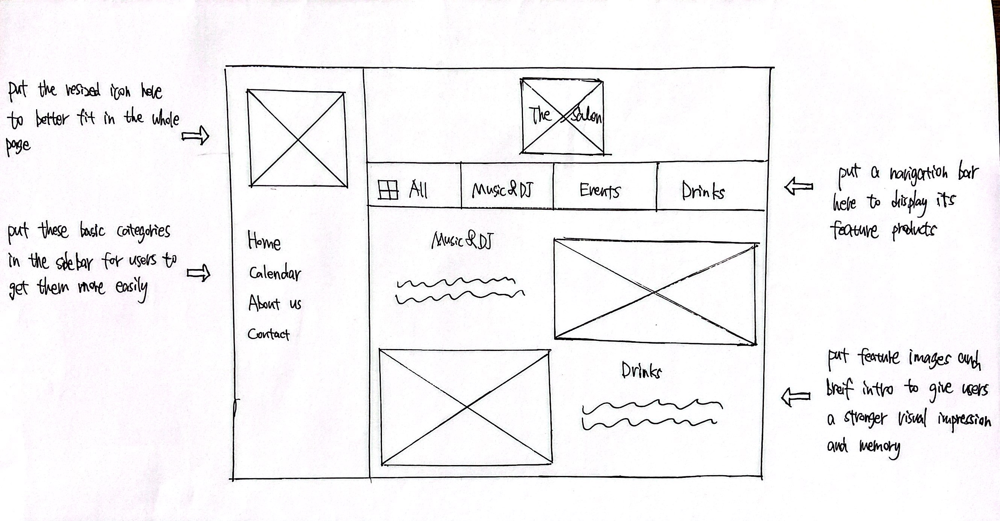
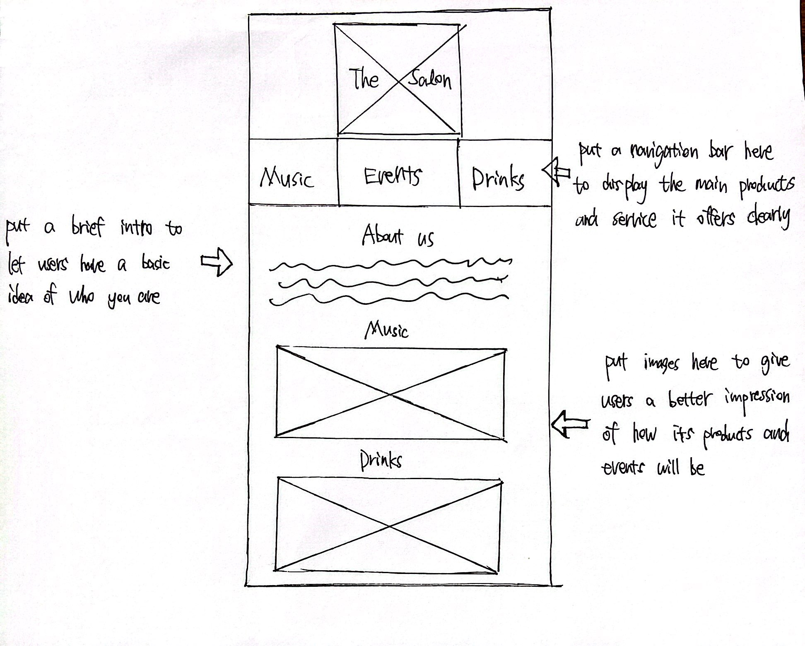
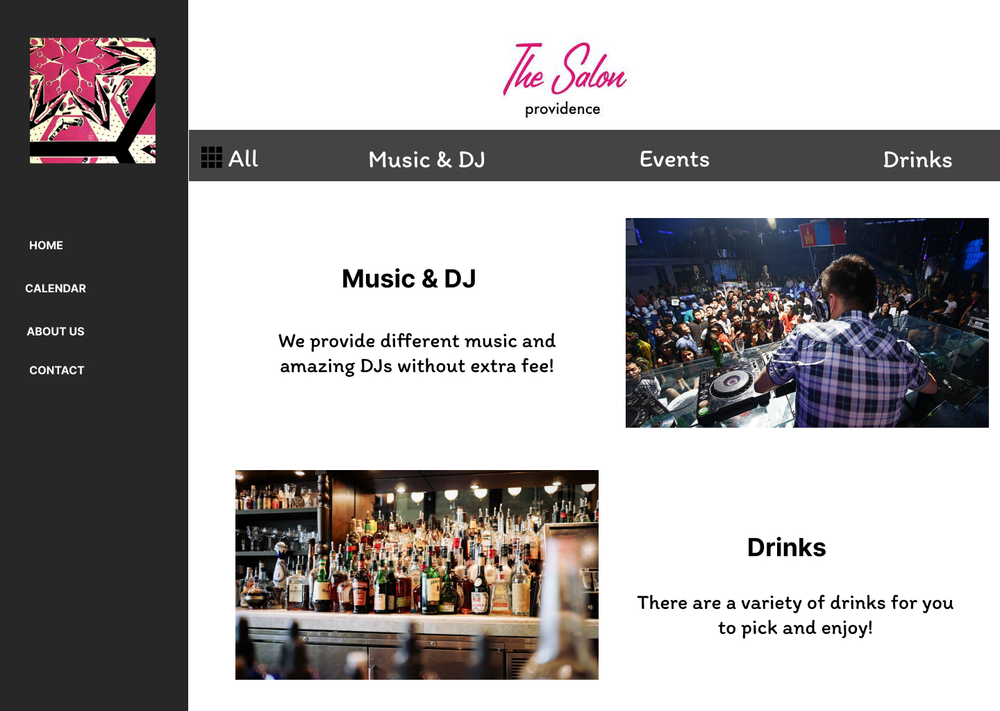
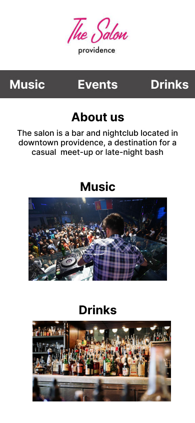

In this project, I first analyzed and identified flaws in an existing interface - a local bar website. Then I created low-fidelity and high-fidelity prototypes for various screen sizes, and built a responsive website based on those prototypes.
Desktop
Mobile
Desktop
Mobile
Before this project, I had the misconception that the best work was always innovative and built-from-scratch. Good designers should never refer to others' ideas or thoughts. However, after deep diving with others' design system and learning how to use established libraries and components , I became more experienced and produced better ideas 'standing on others' shoulders'. Learning how to build on others work and leveraging others designs makes me a better designer!